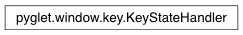

KeyStateHandler Class¶
-
class
KeyStateHandler¶ Simple handler that tracks the state of keys on the keyboard. If a key is pressed then this handler holds a True value for it.
For example:
>>> win = window.Window >>> keyboard = key.KeyStateHandler() >>> win.push_handlers(keyboard) # Hold down the "up" arrow... >>> keyboard[key.UP] True >>> keyboard[key.DOWN] False
Methods:
clear(() -> None. Remove all items from D.)copy(() -> a shallow copy of D)get((k[,d]) -> D[k] if k in D, …)items(…)keys(…)pop((k[,d]) -> v, …)If key is not found, d is returned if given, otherwise KeyError is raised popitem(() -> (k, v), …)2-tuple; but raise KeyError if D is empty. setdefault((k[,d]) -> D.get(k,d), …)update(([E, …)If E is present and has a .keys() method, then does: for k in E: D[k] = E[k] values(…)
Inherited members¶
Methods
KeyStateHandler.clear() → None. Remove all items from D.
KeyStateHandler.copy() → a shallow copy of D
KeyStateHandler.get(k[, d]) → D[k] if k in D, else d. d defaults to None.
KeyStateHandler.items() → a set-like object providing a view on D’s items
KeyStateHandler.keys() → a set-like object providing a view on D’s keys
KeyStateHandler.pop(k[, d]) → v, remove specified key and return the corresponding value.If key is not found, d is returned if given, otherwise KeyError is raised
KeyStateHandler.popitem() → (k, v), remove and return some (key, value) pair as a2-tuple; but raise KeyError if D is empty.
KeyStateHandler.setdefault(k[, d]) → D.get(k,d), also set D[k]=d if k not in D
KeyStateHandler.update([E, ]**F) → None. Update D from dict/iterable E and F.If E is present and has a .keys() method, then does: for k in E: D[k] = E[k] If E is present and lacks a .keys() method, then does: for k, v in E: D[k] = v In either case, this is followed by: for k in F: D[k] = F[k]
KeyStateHandler.values() → an object providing a view on D’s values